01
Gamified oefenervaring
Kinderen doen revalidatieoefeningen via interactieve uitdagingen, beloningen, badges en voortgangssystemen.
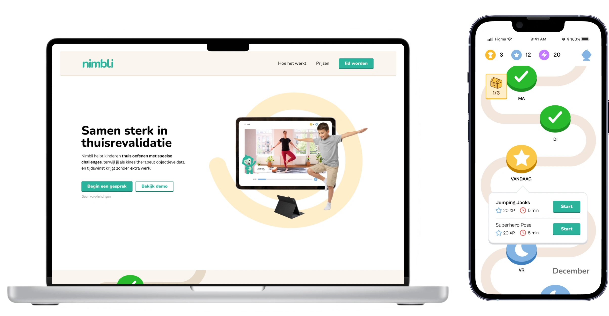
Nimbli
Nimbli werd ontwikkeld als bachelorproject en richt zich op een veelvoorkomend probleem in de pediatrische revalidatie: kinderen verliezen vaak motivatie als ze oefeningen thuis moeten blijven doen. Het platform combineert gamification, AI-gestuurde pose-detectie en voortgangsregistratie om kinderen betrokken te houden en ouders en fysiotherapeuten beter zicht te geven op het revalidatieproces.
Kinderen hebben vaak moeite om gemotiveerd te blijven bij het doen van fysiotherapie-oefeningen thuis. Zonder de aanwezigheid van een therapeut worden oefeningen snel repetitief en voelen ze als een verplichting.
Dat leidt tot lage betrokkenheid, langzamere herstelprocessen en beperkte zichtbaarheid voor ouders en fysiotherapeuten op de voortgang van een kind. Onderzoek laat zien dat slechts ongeveer de helft van de gezinnen thuis oefeningen consequent uitvoert.
Om het probleem beter te begrijpen, deden we uitgebreid onderzoek, waaronder interviews met fysiotherapeuten en kindercoaches, journey mapping, concurrentieanalyse, literatuuronderzoek en marktonderzoek.
De bevindingen lieten drie terugkerende thema's zien:
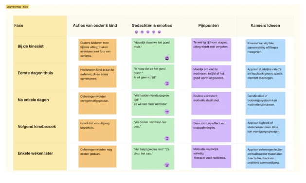
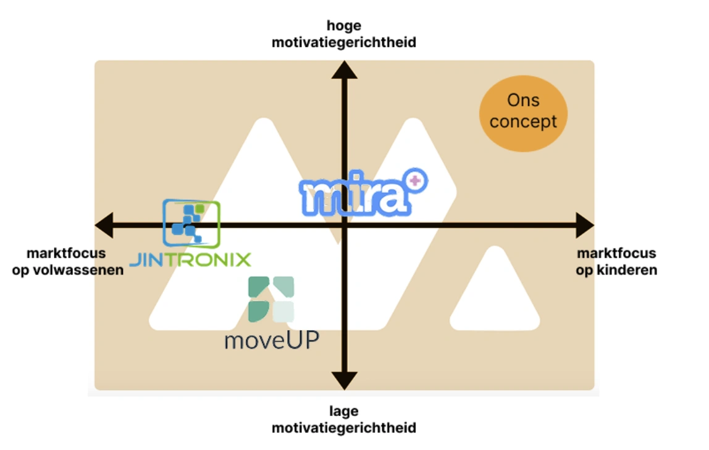
Uit onderzoek bleek dat de grootste uitdaging niet het uitvoeren van de oefeningen was, maar het behouden van motivatie tussen fysiotherapie-sessies. Kinderen vertrouwden vaak op ouderlijke aanmoediging, terwijl fysiotherapeuten weinig zicht hadden op wat er thuis gebeurde.
Dit inzicht verschuift de focus van oefenmanagement naar motivatie, betrokkenheid en zichtbaarheid van voortgang.
Op basis van onze onderzoeksresultaten vertaalden we de belangrijkste gebruikersbehoeften naar een gestructureerde productstrategie. Omdat kinderen, ouders en fysiotherapeuten elkaar op verschillende manieren ontmoeten in het revalidatieproces, was het essentieel om te bepalen welke functies de meeste waarde zouden opleveren voor elke stakeholder.
Een MoSCoW-prioriteitsworkshop hielp bepalen welke functies essentieel waren voor de eerste versie van het platform en welke later konden worden toegevoegd.
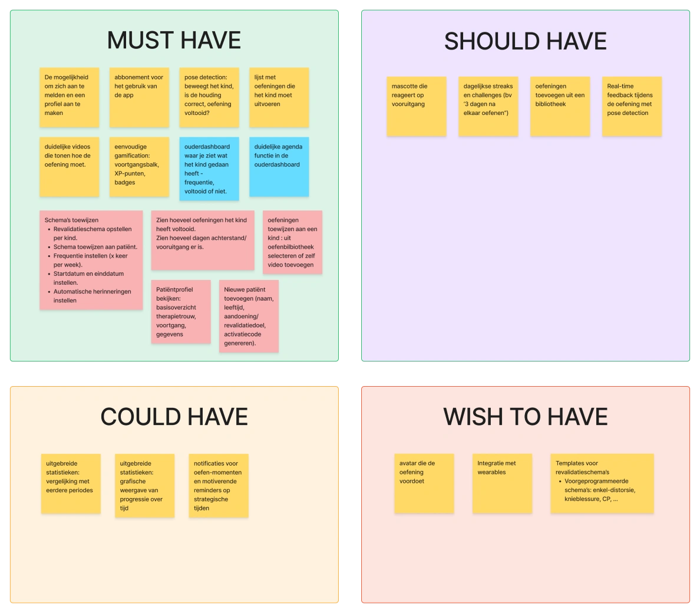
Op basis van onze onderzoeksinzichten legden we de interacties tussen de drie belangrijkste stakeholders vast:
Iedere stakeholder had andere doelen en informatiebehoeften. Dat leidde tot een platformstructuur die alle drie de gebruikersreizen met elkaar verbond terwijl de kindervaring centraal bleef staan in het product.
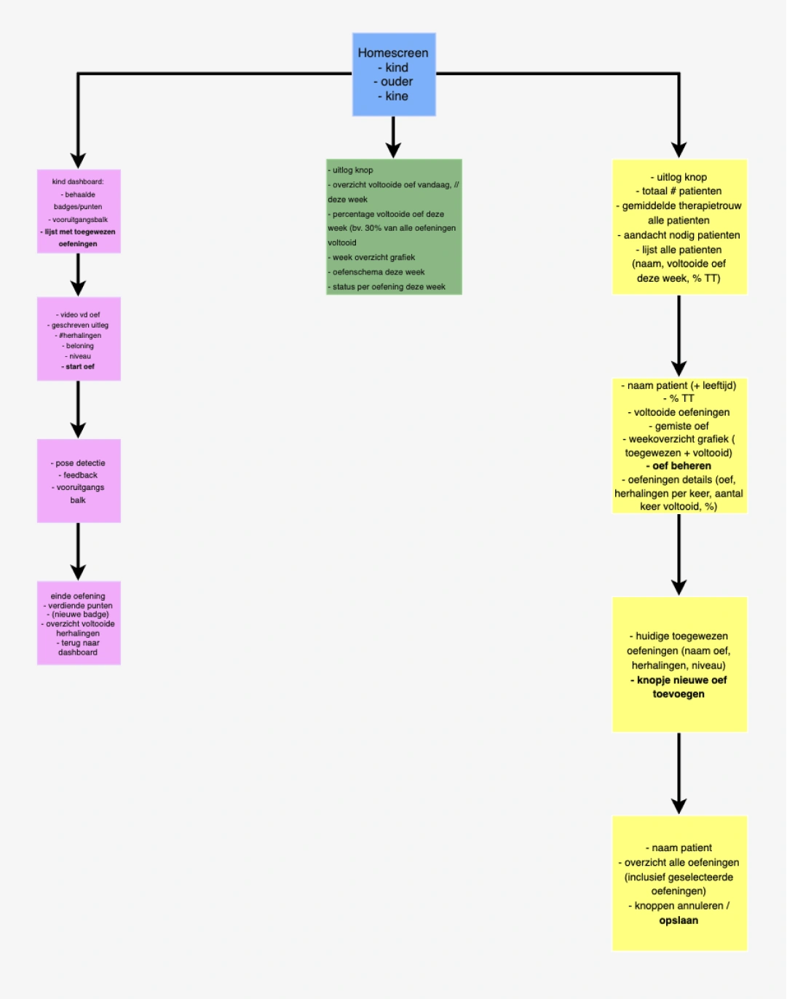
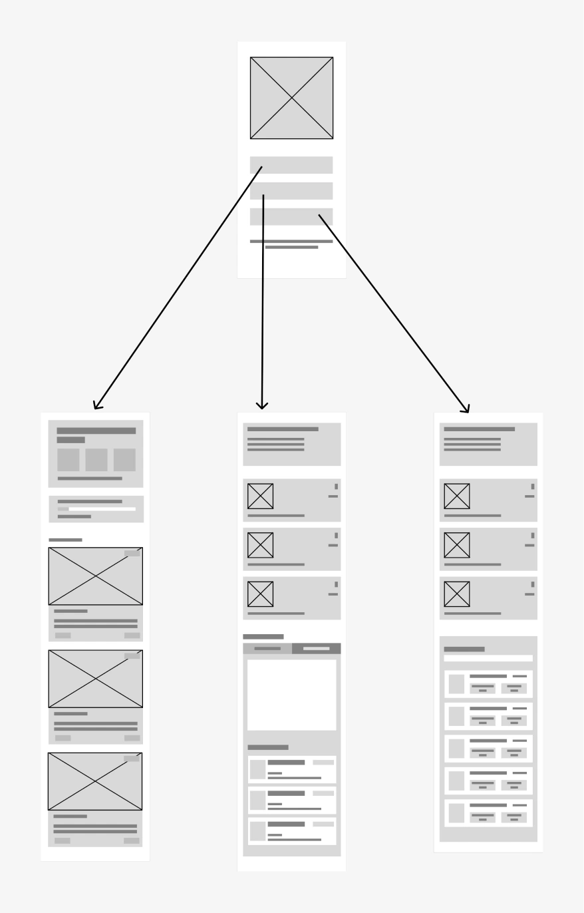
Om de uitdagingen van motivatie, ouderbetrokkenheid en zichtbaarheid voor therapeuten aan te pakken, combineert Nimbli gamification, AI-gestuurde oefentracking en voortgangsmonitoring in één verbonden platform.
Kinderen doen revalidatieoefeningen via interactieve uitdagingen, beloningen, badges en voortgangssystemen.
Het platform gebruikt camera-gebaseerde pose-detectie om bewegingen te controleren en realtime feedback te geven.
Ouders kunnen voortgang, voltooide oefeningen en komende taken volgen.
Fysiotherapeuten kunnen oefeningen toewijzen, betrokkenheid volgen en de voortgang van patiënten op afstand monitoren.
Voordat we overgingen naar high-fidelity design, onderzochten we verschillende interactiepatronen en dashboardstructuren via wireframes. Er werd speciale aandacht besteed aan het vereenvoudigen van oefenstromen en het verminderen van cognitieve belasting voor jonge gebruikers.
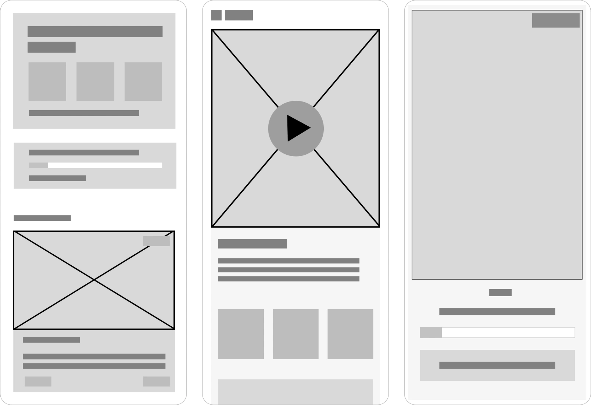
Om revalidatie minder klinisch en aantrekkelijker te laten voelen, ontwikkelden we een speelse en toegankelijke merkidentiteit.
De visuele taal combineert vriendelijke illustraties, levendige kleuren en game-achtige elementen om een motiverende ervaring voor kinderen te creëren terwijl vertrouwen voor ouders en therapeuten behouden blijft.
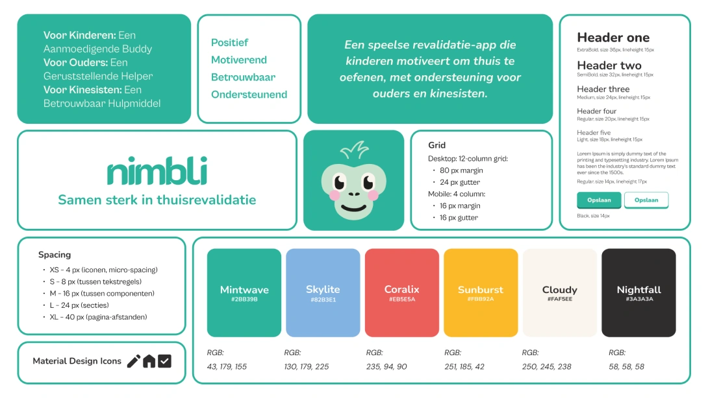
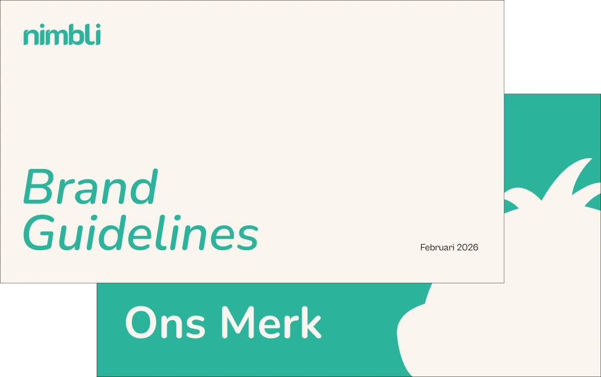
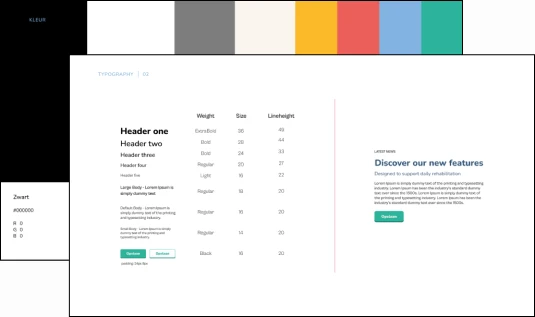
Kinderen worden begeleid door boeiende oefenuitdagingen, ontvangen beloningen voor het voltooien van activiteiten en kunnen hun voortgang in de loop van de tijd volgen. Ouders krijgen beter zicht op voltooide oefeningen en revalidatiedoelen, terwijl fysiotherapeuten op afstand de naleving kunnen volgen en behandelplannen kunnen aanpassen wanneer dat nodig is. Door repetitieve revalidatieoefeningen om te zetten in een interactievere en waardevollere ervaring, wil Nimbli de motivatie verhogen, de consistentie verbeteren en de communicatie tussen alle betrokken stakeholders in het herstelproces versterken.
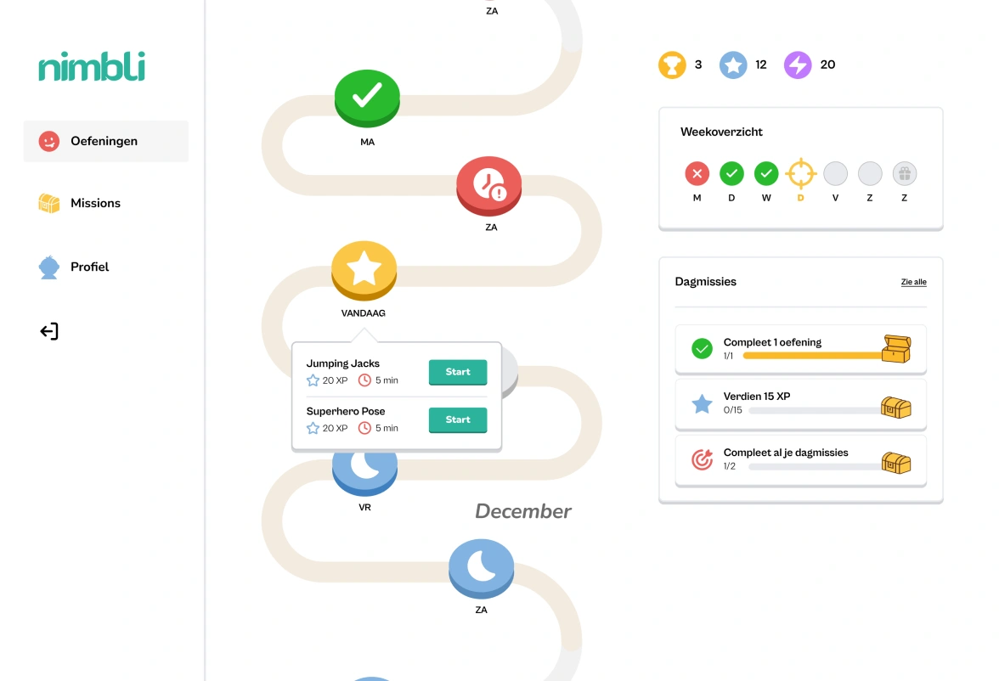
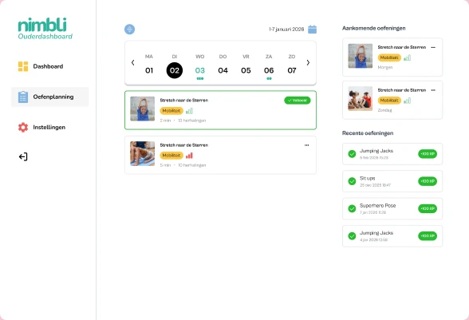
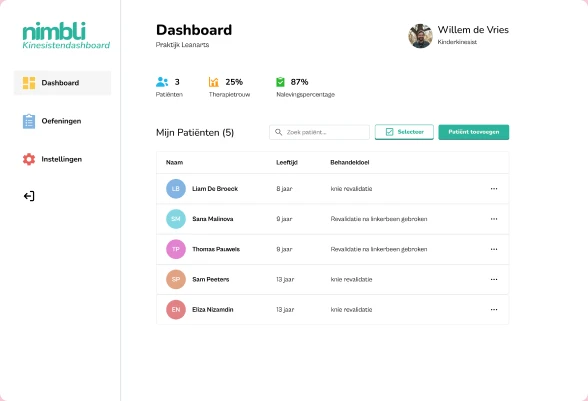
Zuiderbad